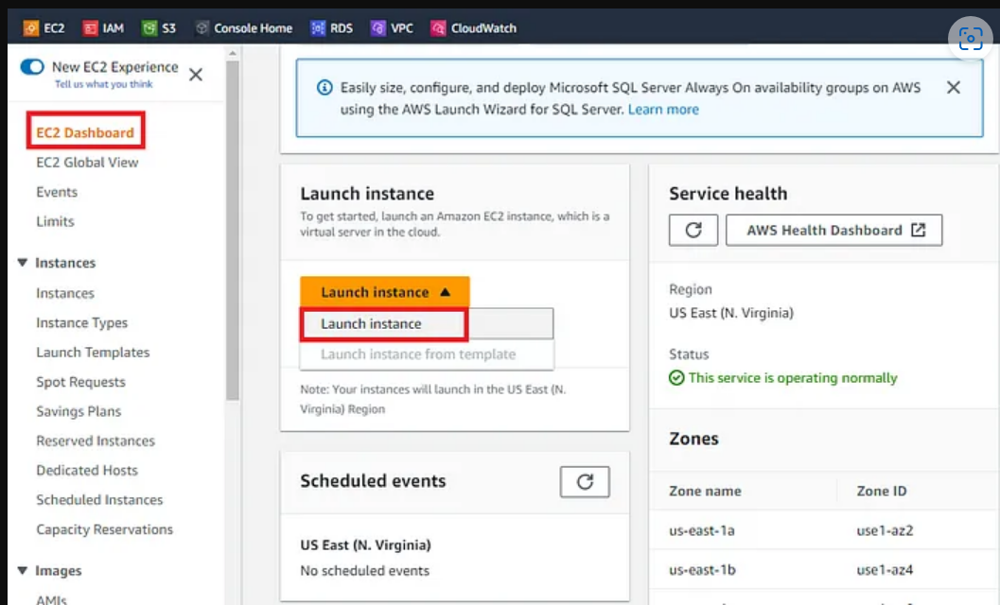
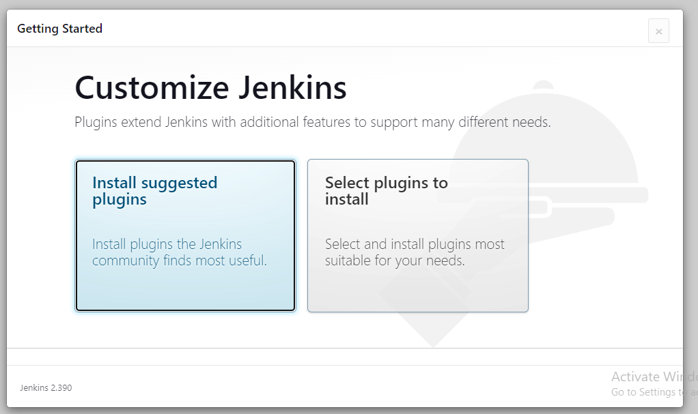
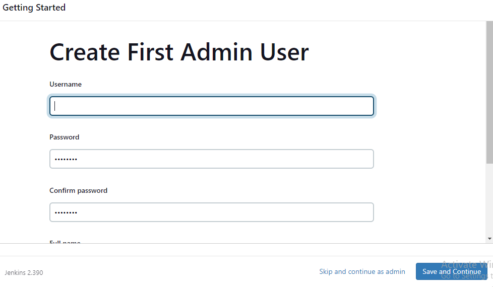
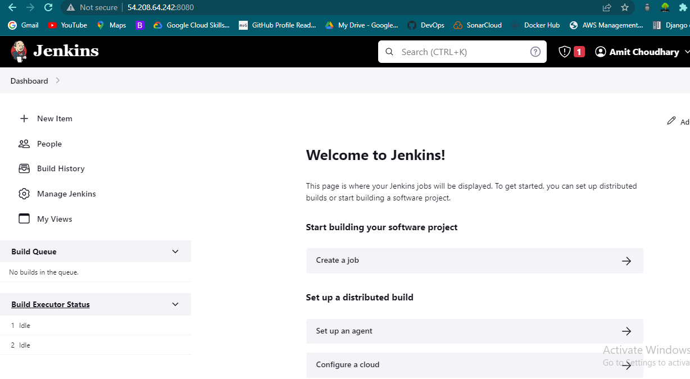

Introduction
In this blog post, we will walk through deploying a Java web application on a Docker container using Jenkins on an AWS EC2 instance. This process involves setting up Jenkins, configuring Maven and Git, integrating GitHub and Maven with Jenkins, setting up a Docker host, integrating Docker with Jenkins, and automating the build and deployment process.

Deployment Architecture Overview
Agenda
- Setup Jenkins
- Setup & Configure Maven and Git
- Integrate GitHub and Maven with Jenkins
- Setup Docker Host
- Integrate Docker with Jenkins
- Automate the Build and Deploy Process Using Jenkins
- Test the Deployment
Prerequisites
- AWS Account
- Git/GitHub Account with Source Code
- A Local Machine with CLI Access
- Familiarity with Docker and Git
Step 1: Setup Jenkins Server on AWS EC2 Instance
- Launch EC2 Instance
- Log in to the AWS Management Console, open the EC2 Dashboard, and click on "Launch Instance."
- Choose an EC2 instance type. For this demo, select the t2.micro instance type, which is eligible for the free tier.
- Select an existing key pair or create a new one if you don’t have one.
- Configure Network Settings: Choose the default VPC and enable "Auto-assign Public IP." Create a new security group allowing SSH traffic and custom TCP port 8080 for Jenkins.
- Review and launch the instance.
AWS EC2 Instance Launch Configuration
- Access the EC2 Instance
- Once the instance is launched, click on the "Connect" button to obtain the SSH connection details.
- Use an SSH client (e.g., MobaXterm on Windows) to connect to the instance.
- Install Jenkins
- Follow instructions from the official Jenkins site to install Jenkins on the EC2 instance.
- Access Jenkins via the public IP of your EC2 instance at port 8080.
- Retrieve the initial admin password from
/var/lib/jenkins/secrets/initialAdminPassword.
  Jenkins Setup on AWS EC2
- Initial Jenkins Configuration
- Follow the setup wizard to install suggested plugins and create the first admin user.
Step 2: Integrate GitHub with Jenkins
- Install Git
sudo yum install git- Verify installation:
git --version
- Verify installation:
- Install GitHub Plugin
- In Jenkins, go to "Manage Jenkins" > "Manage Plugins" > "Available," search for "GitHub Integration," and install it.
- Configure Git
- Go to "Manage Jenkins" > "Global Tool Configuration."
- Add Git installation details, providing either the path or a simple name.
Step 3: Integrate Maven with Jenkins
- Install Maven
cd /opt sudo wget http://apache.mirrors.hoobly.com/maven/maven-3/3.8.4/binaries/apache-maven-3.8.4-bin.tar.gz sudo tar xzf apache-maven-3.8.4-bin.tar.gz - Configure Environment Variables
- Edit
~/.bash_profileto include Maven and Java paths:
export JAVA_HOME=/usr/lib/jvm/java-11-openjdk export M2_HOME=/opt/apache-maven-3.8.4 export PATH=$PATH:$M2_HOME/bin - Edit
- Reload the profile:
source ~/.bash_profile - Install Maven Plugin in Jenkins
- Go to "Manage Jenkins" > "Manage Plugins" and install the Maven Integration Plugin.
- Configure Maven in "Global Tool Configuration."
Step 4: Setup a Docker Host
- Launch EC2 Instance and Install Docker
- Launch a new EC2 instance (similar to Step 1) and SSH into it.
- Install Docker:
sudo yum install docker sudo systemctl start docker sudo systemctl enable dockerInstalling Docker on EC2 Instance
- Run a Basic Docker Container
- Run a test Docker container to ensure Docker is working:
sudo docker run hello-world - Pull Tomcat Image from Docker Hub
sudo docker pull tomcat - Test Docker Container with a Simple WAR
- Copy WAR file to the container:
docker cp webapp.war tomcat-container:/usr/local/tomcat/webapps - Verify deployment by accessing
http://:8081
Step 5: Integrate Docker with Jenkins
- Install Docker Plugin in Jenkins
- Go to "Manage Jenkins" > "Manage Plugins" > "Available," search for "Docker," and install it.
- Configure Docker in Jenkins
- Go to "Manage Jenkins" > "Configure System" and add Docker details.
Step 6: Configure Jenkins Pipeline
- Create a New Pipeline Job
- In Jenkins, go to "New Item," enter a name, select "Pipeline," and click "OK."
- Under the "Pipeline" section, configure the pipeline script to automate the build and deployment process.
- Pipeline Script
pipeline { agent any stages { stage('Build') { steps { script { docker.build('myapp', '.') } } } stage('Deploy') { steps { script { docker.image('myapp').run('-p 8080:8080') } } } } } - Test the Pipeline
- Run the Jenkins pipeline job and monitor the console output for build and deployment status.
Step 7: Update Dockerfile to Copy Artifacts
- Update Dockerfile
FROM tomcat:latest RUN cp -R /usr/local/tomcat/webapps.dist/* /usr/local/tomcat/webapps COPY ./*.war /usr/local/tomcat/webapps - Build and Run Docker Container
- Build and run the updated image:
docker build -t tomcat:v1 . docker run -d --name tomcatv1 -p 8086:8080 tomcat:v1
Step 8: Automate Build and Deployment
- Configure Jenkins Pipeline
- Add commands to the Jenkins job to build and deploy the Docker container:
cd /opt/docker docker build -t regapp:v1 . docker run -d --name registerapp -p 8087:8080 regapp:v1 - Trigger Build and Verify
- Commit changes to GitHub to trigger Jenkins build and verify deployment by accessing the application in the browser.